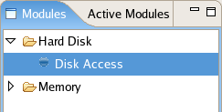
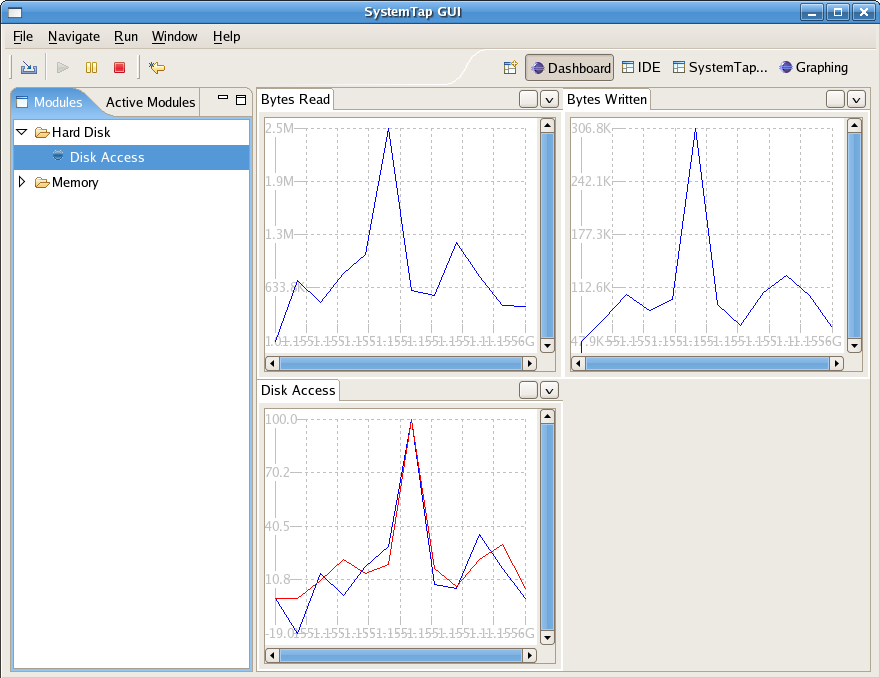
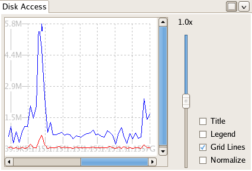
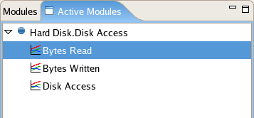
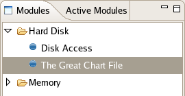

| SystemTap Dashboard | ||
|---|---|---|
|
|
|
|
| SystemTap Graphing | Updating This Document | |
Welcome to SystemTap GUI help pages. Here you will find wide selection of help pages covering the Dashboard Perspective of SystemTap GUI.
The Dashboard Perspective is the most advanced part of SystemTap GUI. It is designed to allow users to browse and run prebuilt Modules in order to see multiple graphs updating in sequence.
For this tutorial we'll use one of the prebuilt modules to illustrate how the Dashboard perspective is used. Each module is part of a module family, a collection of related modules. To start, switch to the Dashboard perspective. On the left you should see a browser titled "Modules".

The Modules Browser contains a list of modules available to run. Notice that there is another tab, "Active Modules", in the same pane. The Active Modules Browser allows you to browse the modules you currently have running. At this point, however, it will be empty; there are no modules currently running. Open the module family "Hard Disk" by clicking the arrow next to it's name. This will display each module associated in the "Hard Disk" module family. We are going to be running the Disk Access module. This can be accomplished two ways. You may select it and Run->Run Script. You can alternatively click the Run Script button in the Toolbar. SystemTap GUI will request the details of the Remote Server(ip address, username, password), enter the details to proceed. You should see a display similar to the following:

The Dashboard shows three graphs, each obtaining data from one script, each analyzing different components of disk access - bytes read, bytes written, and a multi-line graph illustrating both.

Each graph comes with graph-specific options:
 -
Close Zoom bar - This hides the zoom bar.
-
Close Zoom bar - This hides the zoom bar.
Take a moment to interact with these options to familiarize yourself with them.

SystemTap GUI supports the execution of more than one module at one time. The currently running script does not not to be halted and the currently open graphs do not need to be closed, though they may be if desired. To execute another module, simply select and run it as described above. If you were to run a module in the Memory module family for example, a new tab will be opened titled 'Memory' in addition to the current tab for 'Hard Disk'.
Up to 8 graphs may be open in each tab at any given time. Drag and drop support is included for the graph types, permitting re-arrangement for ideal analysis. In addition, Pausing is also implemented in SystemTap GUI. You may pause any module by selecting Run->Pause Module, or by selecting Pause from the toolbar. Know that this method of pausing is an illusion; the graph data is simply not updated while the script continues to run. This inability to truly pause is inherent in SystemTap itself. You can also stop the script using the above methods. This will halt the running script of that module and remove the graphs entirely from the view pane. It will not affect graphs or scripts associated with any other modules. If at any time you are unsure of which modules are currently active you can check this by navigating to the Active Modules Browser
This section of the Dashboard User Guide details conceptual topics of the application; the major components, what they do, and how how you interact with them.
A module is a package used in the Dashboard perspective, containing a SystemTap script and associated metadata.
Modules are grouped in "module families", groups of modules that are related. One example is the Hard Disk module family which contains the module Disk Access:
Often, as in the case of the Disk Access module, modules will spawn multiple graphs on execution.
There are a number of different module families constructed for different analysis sets.
The Modules Browser displays all the modules available to run, categorized by module families. Modules in each family can be viewed by expanding the appropriate module family name.
From the Modules Browser the following options are available on right-clicking a module:
To view the currently active modules, switch to the Active Modules Browser .
The Active Modules Browser displays each module currently active.

The following right click options exist for the graphs embedded in each of the active modules:
To view all modules available, switch to the Modules Browser .
This section of the Dashboard User Guild is intended to provide help pages for common tasks that the user may wish to perform in the Dashboard Perspective.
SystemTap GUI allows for the creation of custom modules. In order to do this the user must have a script that returns data in a consistent pattern along with providing a regular expression to interpret it; the same requirements as any script run in the Graphics Perspective. Creating a module can be done in two ways
Using the Export Script option in the File menu of the IDE Perspective. This will create a module from a script that is currently open in the IDE. The module will consist of the script and metadata information stored as a '.dash' file on the local system(where SystemTapGUI is running).The user is first prompted for regular expression details (just like in the Graphing perspective) after which a dialog box similar to the following shows up:

The dialogue box has the following properties:
module family.
module is ran.
When you click ok your module will be added into the Module Browser in the Dashboard Perspective.

Using the Create Module option in the dashboard or IDE toolbar. This will create a module from an example script that available on the remote System, Users will have to specify the location of the examples directory and the path to the script.The module will consist of only the metadata information stored as a '.dash' file on the local system(where SystemTapGUI is running). The script will not be packaged with the module, the location specified will be used to run the script directly on the remote system. The user would have to first enter the script details, and then follow the same set of steps as in the previous option.

Make sure your script works fine with the regular expression and the graphs are as desired using the IDE/Graphing perspectives before creating a dashboard module using the script.
The script should adhere to the below constraints to add it to the dashboard:
The Dashboard Perspective allows for the import of modules by using the option '''File->Import Module Location'''. Simply navigate to and select the module file you wish to import, and SystemTap GUI will add the module to the Modules Browser in the Dashboard Perspective.

The Modules Browser contains a list of modules available to run.
Running modules in the Dashboard Perspective can be accomplished in three different ways. You may select it and Run->Run Script. You can alternatively click the Run Script button in the Toolbar. SystemTap GUI will request the details of the remote system(IPAddress,username,password).Enter these details and make sure that the username has sufficient access to execute SystemTap scripts You should see a display similar to the following, graphs differing based on what module you chose to run and Module Browser differences based off of your current module include list:
SystemTap GUI supports the execution of more than one module at one time. The currently running script does not not to be halted and the currently open graphs do not need to be closed, though they may be if desired. To execute another module, simply select and run it using one of the two methods described above.
Up to 8 graphs may be open at one given time in any given tab. Stopping the script will halt the running script of that module and remove the graphs entirely from the view pane. It will not affect graphs or scripts associated with any other modules. If at any time you are unsure of which modules are currently active you can check this by navigating to the Active Modules Browser
The graphical options used in the Dashboard perspective:
-
Close Zoom bar - This hides the zoom bar.
This section of the Dashboard User Guild is intended to provide the following resources should you have any very specific questions regarding the Dashboard Perspective in general or one of the options associated with it. It also contains example scripts and FAQs.
This section details frequently asked questions relating to the Dashboard Perspective.
Can more than one module be open at any given time?
A: SystemTap GUI supports the execution of more than one module at one time. The currently running script does not not to be halted and the currently open graphs do not need to be closed, though they may be if desired. To execute another module, simply select and run it as described previously . If you were to run the Page Faults module in the Memory module family for example, an additional tab will be created for the Memory module family
How many graphs may be opened at one time?
A: Currently, 8 in each tab(i.e, 8 per module family). You may close graphs to make more room by using the closebox.
Is there an option to pause specific graphs?
A: No. You can pause or stop a specific module, which will in turn pause or stop the specific graphs associated with it, but you cannot pause or stop just one graph unless that module produces just one graph or you close all but that graph.
What follows is a comprehension list of the menu options available within the Systemtap GUI Dashboard Perspective.

SystemTap GUI currently has two toolbars built in; an Action Bar for file and execution operations and a Perspective Selector to jump to different perspectives.
 Import Dashboard Module Location - This option brings up a dialogue box prompting the user for a module file which is then loaded into the
Modules Browser .
Import Dashboard Module Location - This option brings up a dialogue box prompting the user for a module file which is then loaded into the
Modules Browser .
 Run - This option runs the selected module in the
Modules Browser .
Run - This option runs the selected module in the
Modules Browser .
 Pause - This option pauses the selected module in the
Modules Browser . Know that this method of pausing is an illusion; the graph data is simply not updated while the script continues to run. This inability to truly pause is inherent in SystemTap itself.
Pause - This option pauses the selected module in the
Modules Browser . Know that this method of pausing is an illusion; the graph data is simply not updated while the script continues to run. This inability to truly pause is inherent in SystemTap itself.
 Stop - This option stops the selected module in the
Modules Browser .
Stop - This option stops the selected module in the
Modules Browser .
 Create a New Dashboard module - This option creates a new module in the
Modules Browser .
Create a New Dashboard module - This option creates a new module in the
Modules Browser .
 IDE Perspective - This launches the IDE Perspective, useful for writing and executing scripts.
IDE Perspective - This launches the IDE Perspective, useful for writing and executing scripts.
 Graphing Perspective - This launches the Graphing Perspective, useful for graphing scripts.
Graphing Perspective - This launches the Graphing Perspective, useful for graphing scripts.
© Copyright IBM Corporation 2012
© Copyright Red Hat, Inc. 2009
© Copyright Phil Muldoon <pkmuldoon@picobot.org> 2006.
This documentation is licensed under the Eclipse Public License v. 1.0.
|
|

|
|
| SystemTap Graphing | Updating This Document |